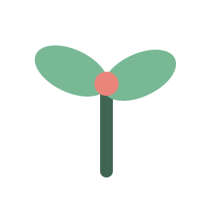
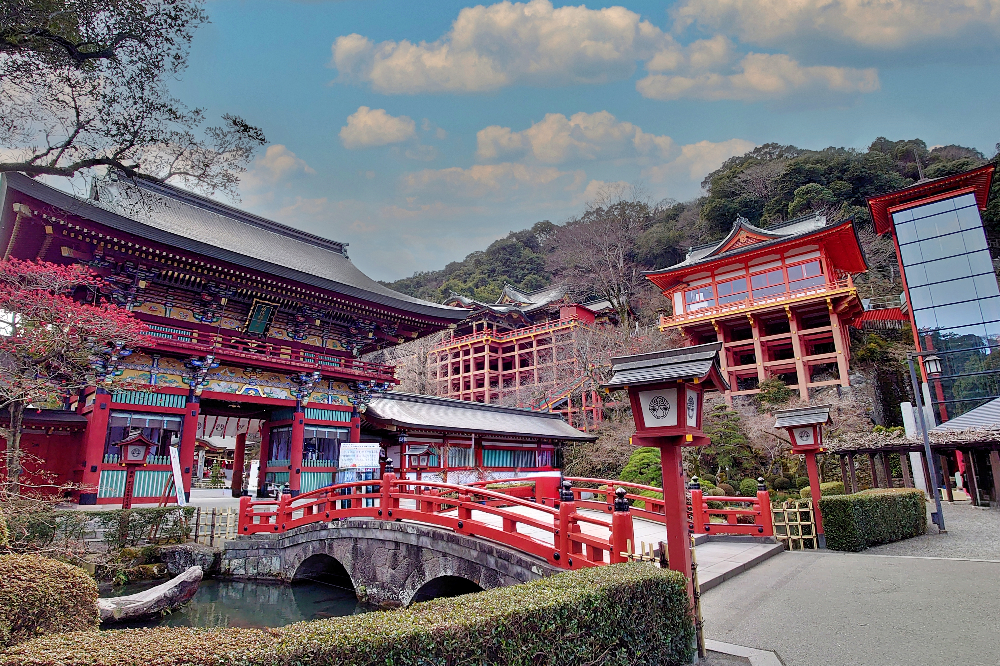

自然・絶景
海や山、田園風景など、ゆっくり眺めたくなる 穏やかな景色が広がっています。

佐賀の魅力をもっと身近に感じていただくための観光情報サイトです。
「佐賀・小さな旅」は、自然・歴史・文化・グルメ・温泉など、 佐賀のさまざまな魅力を紹介する観光情報サイトです。
日帰りや短い休日でも楽しめる、小さな旅のきっかけを 届けたいという思いを込めています。
海や山、田園風景など、ゆっくり眺めたくなる 穏やかな景色が広がっています。
神社や城跡、焼き物の里など、佐賀ならではの 歴史と文化に触れられます。
海の幸や山の幸、地域で親しまれてきた さまざまな味を楽しめます。
嬉野温泉や武雄温泉など、心も体もゆっくりと 癒せる温泉地があります。
旅先でのふれあいや会話を通じて、 佐賀の人々のあたたかさを感じられます。

このサイトでは、佐賀への小旅行を楽しむための情報を 分かりやすく紹介しています。
「佐賀・小さな旅」をご覧いただきありがとうございます。 このサイトを通して、佐賀の魅力を少しでも感じていただければ幸いです。
saga-small-trip@example.com
@saga_small_trip
※連絡先・SNSはポートフォリオ用のサンプル表記です。